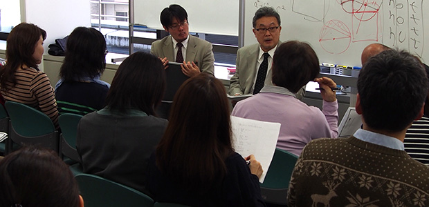
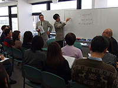
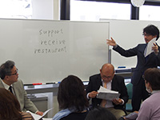
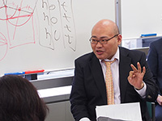
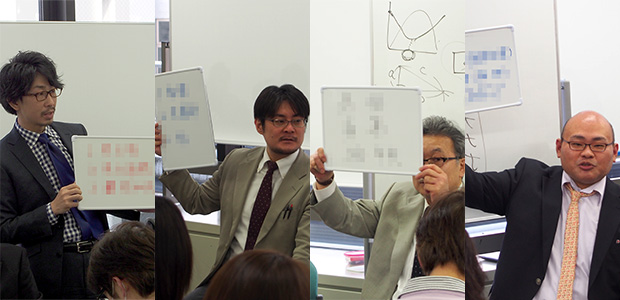

3月22日、クセジュQEI教室で月一お話会の第二回を開催しました。今日はその感想も含めてプチ・レポートを一つ書いてみたいと思います。
大盛況
先月から始まった月一お話会ですが、この2月、3月、4月はタイムリーに「高校入試」をテーマにしています。先月は私立入試、そして今月は公立入試、4月は2015年度の総括と、それぞれにこの会でしか聞くことができないお得な情報をお伝えすべく、ARCS所員一同準備を重ねています。今日はそんな準備が報われたのか、公立入試というテーマの注目度ゆえか、会場が満員となり、急遽特別席を用意するまでになりました。

公立入試の近年の特徴

会の最初は2015年の公立入試問題の分析から始まります。数学・社会・英語をピックアップして最近の入試問題を振り返りましたが、ヒトコトで言うと「私立以上の難易度になっている」ということ。特に数学に関しては、池村先生をして「講師キャリアを通してベストファイブに入る難度」という問題が出題されるなど、かなりハードな戦いになっているようです。私自身数学は苦手だったこともあり、資料でその問題を見てもさっぱり解法が思いつきませんでした。
英語・社会も全体的に難化しており、これまでのような「簡単な公立入試では高得点をとれる」というイメージは完全に過去のものとなったことが分かります。県立高校の最近の様子

近隣の県立高校をいくつかピックアップして、現在その高校に通っている生徒のアンケートをもとに校風や受験指導について切り込む第二部。これもまた、これまで世間に流布していた一般的なイメージとだいぶ違う現実の姿が浮き彫りになります。受験指導の弱さでたたかれがちな公立ですが、その批判を受けて受験指導を熱心に行うようになった学校ほど実績が悪くなっていたり、厳しいイメージのある私立のほうが、昔の公立のようなおおらかさをもっていたり、と、先入観を捨てて観察してみると、いろいろとおもしろい結論が導き出されてきます。参加講師おすすめの高校
第三部は参加講師おすすめの公立高校。近隣ではみんながあこがれる”あの高校”がおすすめされていなくて驚きましたね。一方で、一見地味で注目を集めにくい高校が全員一致でおすすめに入っていたりと、意外なところがたくさんありました。

ここ数年大学入試をメインフィールドにしている私は、どちらかというと受験指導面でのお話をしましたが、高校入試からの視点、そして学校生活の視点、それぞれに講師の私でも新鮮な情報がたくさんありました。講師一同”ここでしか話せないこと”満載でお送りする「月一お話会」。次回はいよいよ2015年入試の総括です。お楽しみに！